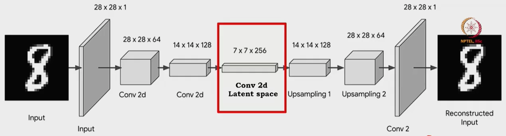
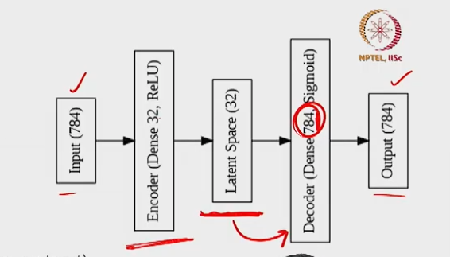
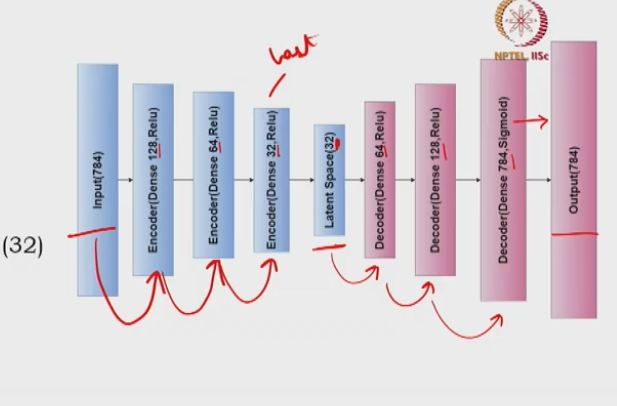

Types of Autoencoders: Architecture and Code-Level Understanding
CNN-based autoencoders, upsampling techniques, shallow vs. deep architectures, and when to use each.
This session explores the major architectural variants of autoencoders — from CNN-based models for images to shallow and deep dense architectures for tabular data — and the code-level decisions that define their behaviour.
1. CNN-Based Autoencoder
1.1 Motivation: From Tabular Data to Images
In previous sessions, autoencoders were applied to tabular data where the encoder and decoder used multi-layer perceptrons (MLPs). When the input is an image, the spatial structure of the data demands a different architecture. A standard MLP flattens the image into a single vector, destroying the two-dimensional spatial relationships between pixels. To preserve and exploit this spatial information, the encoder and decoder must use convolutional neural networks (CNNs), yielding a CNN-based autoencoder.
Regardless of the input data type, every autoencoder retains the same three-component structure: an encoder, a latent space (compressed representation), and a decoder. The only change is in the layer types — from dense layers (MLP) to convolutional layers (CNN) when the input is an image.
1.2 Encoder Architecture
The encoder in a CNN-based autoencoder uses two key operations to progressively compress the spatial dimensions while extracting meaningful features:
- Convolutional layer (Conv2D): Extracts local spatial features (edges, textures, shapes) using learnable kernels. Each kernel slides across the image and produces a feature map. The number of kernels determines the depth of the output volume.
- Pooling layer (MaxPooling2D): Reduces the spatial dimensions by taking the maximum value within each pooling window. In autoencoders, max pooling is preferred because it retains the most prominent features while downsampling. A pooling window of size $2 \times 2$ reduces each spatial dimension by half.
The encoder alternates between convolutional and pooling layers, progressively reducing spatial dimensions while increasing the number of feature channels — producing a compressed representation that captures the most important spatial features.

1.3 Latent Space
The latent space is the output of the last convolutional layer in the encoder. It serves as the compressed representation of the input image, containing the most essential features in a reduced spatial format. In the example architecture, the input $28 \times 28 \times 1$ is compressed down to $7 \times 7 \times 256$ — a spatial compression ratio of $4:1$ in each dimension, while channel depth expands from 1 to 256 to capture richer feature representations.
1.4 Decoder Architecture
The decoder reconstructs the original image from the compressed latent representation. Since the latent space has smaller spatial dimensions, the decoder needs to upsample the data back to the original size using:
- UpSampling2D layer: Increases spatial dimensions (e.g., $7 \times 7 \to 14 \times 14$ with factor 2).
- Conv2D layer: Applied after upsampling to refine the expanded feature maps and progressively reduce channels.
- Final Conv2D layer: Reduces channel depth back to the original number (1 for grayscale) with a sigmoid activation.
1.5 Detailed Architecture: Encoder Path
For a grayscale input of size $28 \times 28 \times 1$:
- Conv2D: 64 kernels, $3 \times 3$, ReLU, same padding: $28 \times 28 \times 64$
- MaxPooling2D: $2 \times 2$: $14 \times 14 \times 64$
- Conv2D: 128 kernels, $3 \times 3$, ReLU, same padding: $14 \times 14 \times 128$
- MaxPooling2D: $2 \times 2$: $7 \times 7 \times 128$
- Conv2D: 256 kernels, $3 \times 3$, ReLU, same padding: $7 \times 7 \times 256$ (latent space)
1.6 Detailed Architecture: Decoder Path
- UpSampling2D: $2 \times 2$: $14 \times 14 \times 256$
- Conv2D: 128 kernels, $3 \times 3$, ReLU: $14 \times 14 \times 128$
- UpSampling2D: $2 \times 2$: $28 \times 28 \times 128$
- Conv2D: 64 kernels, $3 \times 3$, ReLU: $28 \times 28 \times 64$
- Conv2D: 1 kernel, $3 \times 3$, sigmoid: $28 \times 28 \times 1$ (reconstruction)
2. Upsampling Techniques in the Decoder
Since the decoder must reconstruct the original image dimensions from a compressed latent space, it needs to increase spatial resolution. Here we cover three upsampling methods.
2.1 Nearest Neighbor Upsampling
Nearest neighbor upsampling duplicates each input value to fill an expanded region determined by the upsampling factor $s$. For an input matrix $X$ of size $h \times w$, each element $x_{i,j}$ is replicated into an $s \times s$ block in the output:
Example. Input $X = \begin{bmatrix} 1 & 2 \\ 3 & 4 \end{bmatrix}$ with $s = 2$:
$$Y = \begin{bmatrix} 1 & 1 & 2 & 2 \\ 1 & 1 & 2 & 2 \\ 3 & 3 & 4 & 4 \\ 3 & 3 & 4 & 4 \end{bmatrix}$$
The key limitation is that this introduces no learnable parameters — the model simply copies values without learning how to intelligently expand the representation.
2.2 Bed of Nails Upsampling (Zero Insertion)
Bed of nails upsampling follows the same expansion pattern but fills all non-source positions with zeros instead of copying the original value. Like nearest neighbor, this has no learnable parameters, making it equally unsuitable as a standalone upsampling strategy.
2.3 Transposed Convolution
Transposed convolution (also called deconvolution) is an upsampling operation that does involve learnable parameters. The kernel weights are learned during training via backpropagation.
Worked example. Input $X = \begin{bmatrix} 1 & 2 \\ 3 & 4 \end{bmatrix}$ and kernel $K = \begin{bmatrix} 4 & 3 \\ 2 & 1 \end{bmatrix}$:
Each input element multiplies the full kernel, producing four $3 \times 3$ matrices positioned at the four corners. Summing them element-wise:
$$Y = \begin{bmatrix} 4 & 11 & 6 \\ 14 & 25 & 12 \\ 6 & 11 & 4 \end{bmatrix}$$
2.4 Checkerboard Artifact Problem
When the kernel slides over certain input regions multiple times, corresponding output pixels accumulate larger values. Regions visited only once produce smaller values. This systematic unevenness manifests as the characteristic grid pattern in the reconstructed image.
2.5 Solution: Upsampling + Convolution
The recommended approach is to first perform upsampling (e.g., nearest neighbor) and then apply a standard convolution. This two-step process ensures the kernel is applied evenly across the entire expanded feature map:
- Step 1: Upsampling spreads values uniformly, increasing spatial dimensions without introducing uneven overlap.
- Step 2: Convolution slides the kernel systematically across the uniformly expanded map, ensuring every region receives equal coverage.
This combination avoids checkerboard artifacts while still incorporating learnable parameters through the convolution kernel weights.
3. Latent Space Dimensionality as a Hyperparameter
The dimensionality of the latent space is a hyperparameter that directly controls reconstruction quality:
- Too small: Excessive compression discards important information. Reconstructions become blurry and lose fine details.
- Moderately large: A larger latent space preserves more information, producing higher-quality reconstructions with sharper details.
- Too large: Beyond a threshold, further increasing dimensionality yields diminishing returns — reconstruction quality deteriorates as the model memorises noise and irrelevant details.
4. Shallow Autoencoder
4.1 Architecture
A shallow autoencoder contains exactly one hidden layer between the input and output layers. The hidden layer serves as both the encoder and the latent space representation.

4.2 Concrete Example
For a flattened MNIST image ($28 \times 28 = 784$ pixels):
- Input layer: 784 neurons
- Hidden layer (encoder + latent): 32 neurons, ReLU activation
- Output layer (decoder): 784 neurons — sigmoid if input normalized to $[0, 1]$ (BCE loss), linear if real-valued (MSE loss)
5. Deep Autoencoder
5.1 Architecture
A deep autoencoder contains multiple hidden layers in both the encoder and decoder. The encoder layers progressively decrease in dimensionality (compressing), while the decoder layers progressively increase (expanding), mirroring the encoder's structure.

5.2 Layer-by-Layer Details
- Encoder H1: $784 \to$ Dense(128, ReLU) $\to 128$
- Encoder H2: $128 \to$ Dense(64, ReLU) $\to 64$
- Encoder H3: $64 \to$ Dense(32, ReLU) $\to$ latent $32$
- Decoder H4: $32 \to$ Dense(64, ReLU) $\to 64$
- Decoder H5: $64 \to$ Dense(128, ReLU) $\to 128$
- Decoder output: $128 \to$ Dense(784, sigmoid/linear) $\to 784$
6. CNN vs Deep Autoencoder for Images
6.1 Why Deep Autoencoders Fail on Images
A deep autoencoder requires flattening the input image into a single vector before passing it through dense layers. This flattening operation destroys the spatial information — the two-dimensional relationships between neighbouring pixels, local edge structures, and geometric patterns are all lost.
6.2 Comparison
| Property | CNN Autoencoder | Deep Autoencoder |
|---|---|---|
| Input format | 2D image ($28 \times 28 \times 1$) | Flattened vector (784) |
| Spatial information | Preserved via convolution | Lost after flattening |
| Feature extraction | Local edges, textures, shapes | Global pixel patterns only |
| Reconstruction quality | Sharp, preserves fine details | Blurry, loses contours and edges |
| Best use case | Image data | Tabular data |
7. Summary of Autoencoder Types
| Property | CNN-Based | Shallow | Deep |
|---|---|---|---|
| Hidden layers | Multiple (conv + pool) | One | Multiple (dense) |
| Encoder type | Conv2D + MaxPool | Dense | Dense |
| Decoder type | UpSampling + Conv2D | Dense | Dense |
| Latent space | Feature maps (spatial) | Vector | Vector |
| Input data | Images | Tabular | Tabular |
| Spatial info | Preserved | N/A | Lost if image |
The next session covers regularisation techniques for autoencoders — including L1/L2 regularisation, dropout, and the specialised regularisation methods for autoencoders.